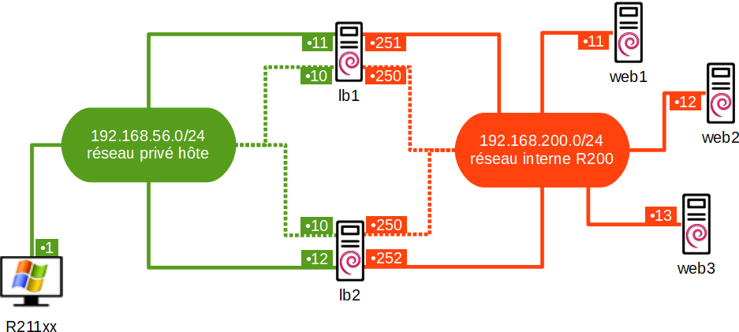

web1
127.0.0.1 localhost
127.0.1.1 web1 web1.labosio.local
# The following lines are desirable for IPv6 capable hosts
::1 localhost ip6-localhost ip6-loopback
ff02::1 ip6-allnodes
ff02::2 ip6-allrouters
#!/bin/sh
apt update
apt -y install apache2
sed -i 's/Apache2 Debian Default Page/WEB1/' /var/www/html/index.html
# localhost
auto lo
iface lo inet loopback
# privé R200 > 192.168.200.0/24
allow-hotplug enp0s3
iface enp0s3 inet static
address 192.168.200.11/24
gateway 192.168.200.254
# ✋ valider la configuration "Réseau" sous VirtualBox, puis redémarrer…